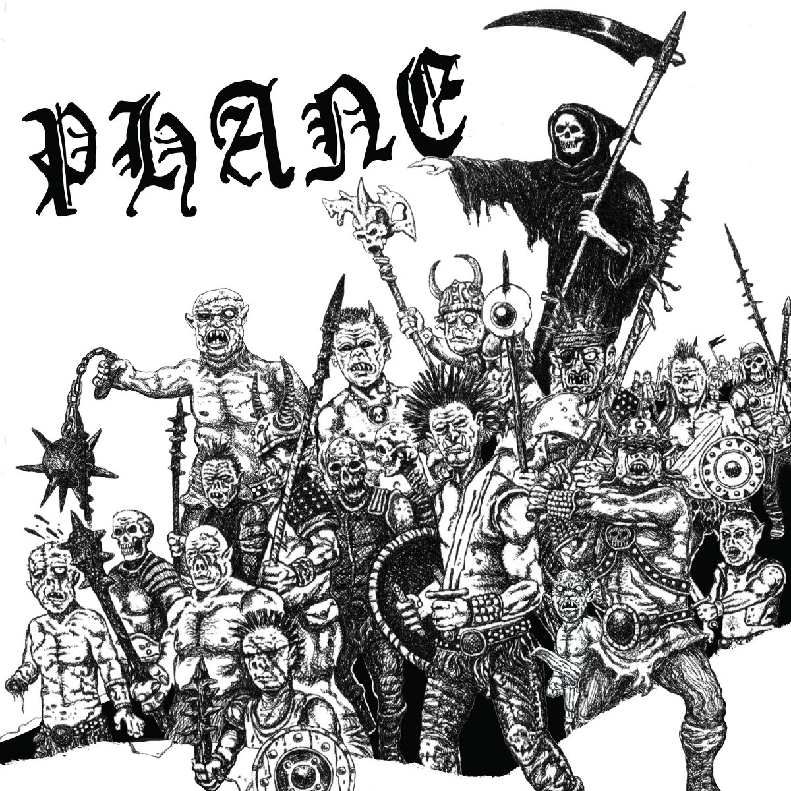
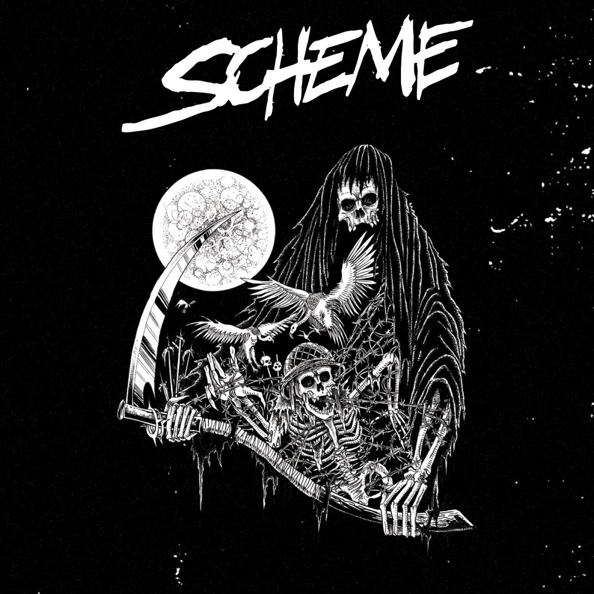
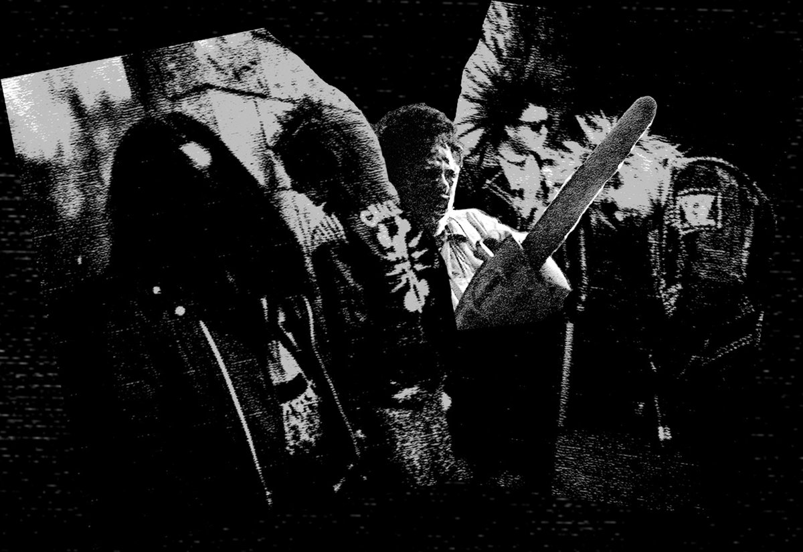
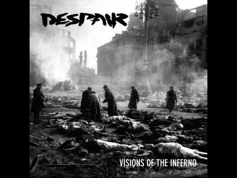
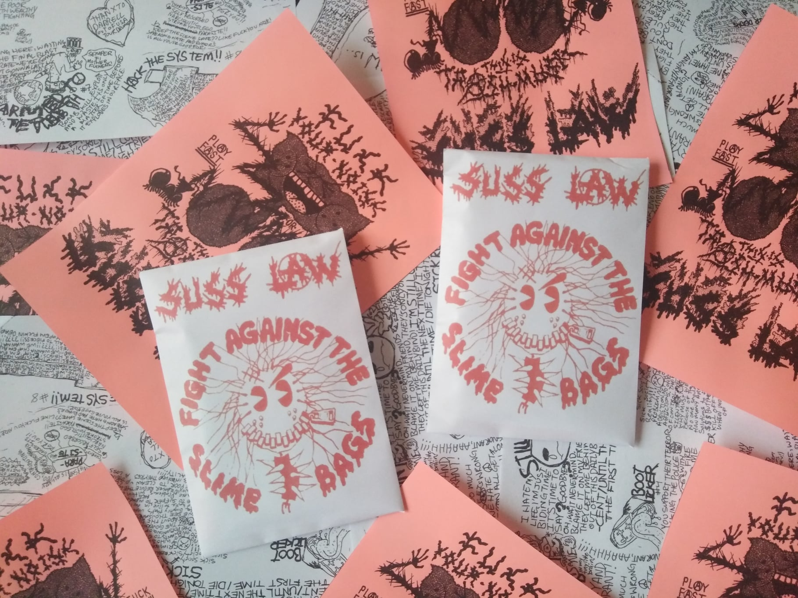

Cordell's Biography
About Me
Hello I am Cordell this page is about me. I am a Computer Science major student at Langara, aside from that on the side I work as a web developer & perform as a musician.
I have traveled and performed all over the world in various groups, and when covid hit it was time to finally pursue a Computer Science degree which is something I had
always wanted to do but never had the time because of a busy tour schedule. Other than that I live in Vancouver with my girl friend and cat, who I love and enjoy spending time with.
With my free time I play to play music, collect records, listen to music, program / develop, make games in unreal and unity engines, play video games and cook!
I have been vegan for the past 10 years now, and enjoy long walks on the beach (which I frequently do!).
So I know this project didn't ask for all this fancy CSS and JavaScript nonesense but I assure you that I made this page to still work with out it!
So if you turn off JavaScript it will still function, I hope you like it!
Dev Projects
I like to make little projects using Nodejs, Reactjs and just programming with JavaScript in general! I'm still "new" to programming in C++ and C#, so I don't really want to share any projects in those languages just yet. However here's a handful of personal projects.
(although I work as a web developer I don't feel comfortable sharing my client's information for this project)Tic Tac Toe
Try it out!repo link
Just what it says, a game of tic-tac-toe! 1 player vs AI or 2 player, coded in Nodejs.
Etch-e-sketch
Try it out!repo link
An older project of mine so the code makes me cringe a bit now, but despite that I'm still proud of this one.
Music
I've spent most of my life playing and performing music, and along the way I have played in several groups and on several records. I have performed live in about 20 countries, most of the states (I think around 35), and most of the provinces! Here is a very small sample of some of the records I've played on.
Phane S/T LP
Listen to it here
Role: Guitar
This is my "main" band, we've played around the world together and this is our debut LP! We recorded this last year and it came out early on this year on Phobia Records.
Scheme S/T
Listen to it here
Role: Vocals
This band is composed of members of Naplam Raid, Massgrave, Decontrol and myself. We started a few years ago and on and off record / perform.
Brutalize - Demo
Listen to it here
Role: Drums
A group I'm doing on the side with some friends (The Moor, No Klasse), playing some good ol' fashioned filthy raw punk and this is our demo!
Despair - Visions Of The Inferno LP
Listen to it here
Role: Guitar
This LP was released in 2018, but we had recorded it in 2015... A long story why it took so long but I won't get into it here!
Suss Law - Fight Against the Slimebags
Listen to it here
Role: Vocals
this band I played in until covid really, since from mid 2015! Based in Portland OR (I would commute to rehearse etc), we toured all over the place, and this recording originally we released as a tour demo tape to make a few bucks, but was recently recived a propper release from No Name Records in Ukraine early this year.